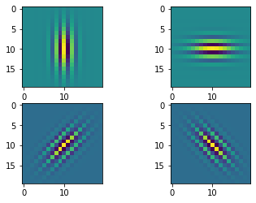

import numpy as np
import matplotlib.pyplot as plt
from einops import rearrange, repeat
import tensorflow as tf
from tensorflow.keras import layers
from tensorflow.keras.datasets import mnist
from flayers.layers import GaborLayerGabor layer experiment
In this quick experiment we will be training an MNIST classifier using multiple
GaborLayer layers followed by ReLU non-linearities. At the same time, the size of the Gabor filters is reduced after each pooling operation.
Library importing
Data loading
We will be using MNIST for a simple and quick test.
(X_train, Y_train), (X_test, Y_test) = mnist.load_data()
X_train = repeat(X_train, "b h w -> b h w c", c=1)/255.0
X_test = repeat(X_test, "b h w -> b h w c", c=1)/255.0
X_train.shape, Y_train.shape, X_test.shape, Y_test.shape((60000, 28, 28, 1), (60000,), (10000, 28, 28, 1), (10000,))Definition of simple model
n_gabors = 4
sigma_i = [0.1, 0.2, 0.1, 0.1]
sigma_j = [0.2, 0.1, 0.2, 0.2]
freq = [10, 10]*2
theta = [0, np.pi/2, np.pi/4, -np.pi/4]
rot_theta = [0, 0]*2
sigma_theta = [0, 0, np.pi/4, -np.pi/4]model = tf.keras.Sequential([
GaborLayer(n_gabors=n_gabors, size=20, imean=0.5, jmean=0.5, sigma_i=sigma_i, sigma_j=sigma_j, freq=freq,
theta=theta, rot_theta=rot_theta, sigma_theta=sigma_theta, fs=20, input_shape=(28,28,1)),
layers.ReLU(),
layers.MaxPool2D(2),
GaborLayer(n_gabors=n_gabors, size=10, imean=0.5, jmean=0.5, sigma_i=sigma_i, sigma_j=sigma_j, freq=freq,
theta=theta, rot_theta=rot_theta, sigma_theta=sigma_theta, fs=10),
layers.ReLU(),
layers.MaxPool2D(2),
GaborLayer(n_gabors=n_gabors, size=5, imean=0.5, jmean=0.5, sigma_i=sigma_i, sigma_j=sigma_j, freq=freq,
theta=theta, rot_theta=rot_theta, sigma_theta=sigma_theta, fs=5),
layers.ReLU(),
layers.MaxPool2D(2),
layers.GlobalAveragePooling2D(),
layers.Dense(10, activation="softmax")
])
model.compile(optimizer="adam",
loss="sparse_categorical_crossentropy",
metrics=["accuracy"])
model.summary()Model: "sequential_1"
_________________________________________________________________
Layer (type) Output Shape Param #
=================================================================
gabor_layer_3 (GaborLayer) (None, 28, 28, 4) 26
_________________________________________________________________
re_lu_3 (ReLU) (None, 28, 28, 4) 0
_________________________________________________________________
max_pooling2d_3 (MaxPooling2 (None, 14, 14, 4) 0
_________________________________________________________________
gabor_layer_4 (GaborLayer) (None, 14, 14, 4) 26
_________________________________________________________________
re_lu_4 (ReLU) (None, 14, 14, 4) 0
_________________________________________________________________
max_pooling2d_4 (MaxPooling2 (None, 7, 7, 4) 0
_________________________________________________________________
gabor_layer_5 (GaborLayer) (None, 7, 7, 4) 26
_________________________________________________________________
re_lu_5 (ReLU) (None, 7, 7, 4) 0
_________________________________________________________________
max_pooling2d_5 (MaxPooling2 (None, 3, 3, 4) 0
_________________________________________________________________
global_average_pooling2d_1 ( (None, 4) 0
_________________________________________________________________
dense_1 (Dense) (None, 10) 50
=================================================================
Total params: 128
Trainable params: 128
Non-trainable params: 0
_________________________________________________________________We can show the initial Gabor filters:
model.layers[0].show_filters()2022-09-08 12:04:47.616859: I tensorflow/compiler/mlir/mlir_graph_optimization_pass.cc:185] None of the MLIR Optimization Passes are enabled (registered 2)
2022-09-08 12:04:47.838710: I tensorflow/core/util/cuda_solvers.cc:180] Creating CudaSolver handles for stream 0x5600333a86c0
model.layers[3].show_filters()model.layers[6].show_filters()history = model.fit(X_train, Y_train, batch_size=128, epochs=100, validation_split=0.2)Epoch 1/1002022-09-08 12:05:58.537282: I tensorflow/stream_executor/cuda/cuda_dnn.cc:369] Loaded cuDNN version 8100
2022-09-08 12:05:58.998947: I tensorflow/core/platform/default/subprocess.cc:304] Start cannot spawn child process: No such file or directory375/375 [==============================] - 45s 88ms/step - loss: 985.9783 - accuracy: 0.1111 - val_loss: 3.0740 - val_accuracy: 0.0936
Epoch 2/100
375/375 [==============================] - 32s 85ms/step - loss: 2.5712 - accuracy: 0.0968 - val_loss: 2.4051 - val_accuracy: 0.0983
Epoch 3/100
375/375 [==============================] - 32s 84ms/step - loss: 2.3618 - accuracy: 0.1037 - val_loss: 2.3399 - val_accuracy: 0.1082
Epoch 4/100
375/375 [==============================] - 33s 87ms/step - loss: 2.3222 - accuracy: 0.1124 - val_loss: 2.3124 - val_accuracy: 0.1216
Epoch 5/100
375/375 [==============================] - 32s 86ms/step - loss: 2.3025 - accuracy: 0.1255 - val_loss: 2.2956 - val_accuracy: 0.1308
Epoch 6/100
375/375 [==============================] - 33s 87ms/step - loss: 2.2889 - accuracy: 0.1331 - val_loss: 2.2823 - val_accuracy: 0.1339
Epoch 7/100
375/375 [==============================] - 31s 84ms/step - loss: 2.2780 - accuracy: 0.1406 - val_loss: 2.2732 - val_accuracy: 0.1412
Epoch 8/100
375/375 [==============================] - 32s 84ms/step - loss: 2.2704 - accuracy: 0.1438 - val_loss: 2.2659 - val_accuracy: 0.1460
Epoch 9/100
375/375 [==============================] - 31s 84ms/step - loss: 2.2643 - accuracy: 0.1460 - val_loss: 2.2597 - val_accuracy: 0.1444
Epoch 10/100
375/375 [==============================] - 32s 85ms/step - loss: 2.2591 - accuracy: 0.1466 - val_loss: 2.2548 - val_accuracy: 0.1482
Epoch 11/100
375/375 [==============================] - 32s 84ms/step - loss: 2.2529 - accuracy: 0.1501 - val_loss: 2.2484 - val_accuracy: 0.1501
Epoch 12/100
375/375 [==============================] - 32s 84ms/step - loss: 2.2463 - accuracy: 0.1546 - val_loss: 2.2382 - val_accuracy: 0.1579
Epoch 13/100
375/375 [==============================] - 31s 84ms/step - loss: 2.2391 - accuracy: 0.1558 - val_loss: 2.2323 - val_accuracy: 0.1558
Epoch 14/100
375/375 [==============================] - 32s 84ms/step - loss: 2.2319 - accuracy: 0.1632 - val_loss: 2.2225 - val_accuracy: 0.1595
Epoch 15/100
375/375 [==============================] - 31s 83ms/step - loss: 2.2251 - accuracy: 0.1623 - val_loss: 2.2168 - val_accuracy: 0.1688
Epoch 16/100
375/375 [==============================] - 31s 84ms/step - loss: 2.2159 - accuracy: 0.1707 - val_loss: 2.2077 - val_accuracy: 0.1709
Epoch 17/100
375/375 [==============================] - 31s 83ms/step - loss: 2.2050 - accuracy: 0.1780 - val_loss: 2.1958 - val_accuracy: 0.1867
Epoch 18/100
375/375 [==============================] - 31s 82ms/step - loss: 2.1919 - accuracy: 0.1858 - val_loss: 2.1867 - val_accuracy: 0.1929
Epoch 19/100
375/375 [==============================] - 31s 81ms/step - loss: 2.1812 - accuracy: 0.1945 - val_loss: 2.1729 - val_accuracy: 0.1979
Epoch 20/100
375/375 [==============================] - 31s 83ms/step - loss: 2.1656 - accuracy: 0.2046 - val_loss: 2.1579 - val_accuracy: 0.2122
Epoch 21/100
375/375 [==============================] - 31s 82ms/step - loss: 2.1526 - accuracy: 0.2124 - val_loss: 2.1398 - val_accuracy: 0.2209
Epoch 22/100
375/375 [==============================] - 31s 84ms/step - loss: 2.1356 - accuracy: 0.2198 - val_loss: 2.1211 - val_accuracy: 0.2302
Epoch 23/100
375/375 [==============================] - 31s 83ms/step - loss: 2.1097 - accuracy: 0.2297 - val_loss: 2.1363 - val_accuracy: 0.1929
Epoch 24/100
375/375 [==============================] - 31s 82ms/step - loss: 2.0828 - accuracy: 0.2349 - val_loss: 2.0603 - val_accuracy: 0.2377
Epoch 25/100
375/375 [==============================] - 31s 82ms/step - loss: 2.0613 - accuracy: 0.2377 - val_loss: 2.0356 - val_accuracy: 0.2533
Epoch 26/100
375/375 [==============================] - 31s 83ms/step - loss: 2.0246 - accuracy: 0.2483 - val_loss: 2.0052 - val_accuracy: 0.2559
Epoch 27/100
375/375 [==============================] - 31s 82ms/step - loss: 1.9939 - accuracy: 0.2626 - val_loss: 2.0181 - val_accuracy: 0.2536
Epoch 28/100
375/375 [==============================] - 31s 83ms/step - loss: 1.9504 - accuracy: 0.2867 - val_loss: 1.9345 - val_accuracy: 0.2952
Epoch 29/100
375/375 [==============================] - 30s 81ms/step - loss: 1.9102 - accuracy: 0.2981 - val_loss: 1.8928 - val_accuracy: 0.3027
Epoch 30/100
375/375 [==============================] - 31s 82ms/step - loss: 1.8791 - accuracy: 0.3022 - val_loss: 1.8656 - val_accuracy: 0.2966
Epoch 31/100
375/375 [==============================] - 31s 81ms/step - loss: 1.8436 - accuracy: 0.3085 - val_loss: 1.8246 - val_accuracy: 0.3078
Epoch 32/100
375/375 [==============================] - 31s 82ms/step - loss: 1.8176 - accuracy: 0.3138 - val_loss: 1.7932 - val_accuracy: 0.3173
Epoch 33/100
375/375 [==============================] - 31s 83ms/step - loss: 1.7868 - accuracy: 0.3216 - val_loss: 1.7776 - val_accuracy: 0.3264
Epoch 34/100
375/375 [==============================] - 31s 82ms/step - loss: 1.7210 - accuracy: 0.3379 - val_loss: 1.6930 - val_accuracy: 0.3298
Epoch 35/100
375/375 [==============================] - 31s 82ms/step - loss: 1.6528 - accuracy: 0.3550 - val_loss: 1.6709 - val_accuracy: 0.3572
Epoch 36/100
375/375 [==============================] - 31s 83ms/step - loss: 1.6281 - accuracy: 0.3638 - val_loss: 1.6007 - val_accuracy: 0.3685
Epoch 37/100
375/375 [==============================] - 31s 83ms/step - loss: 1.5943 - accuracy: 0.3723 - val_loss: 1.5715 - val_accuracy: 0.3918
Epoch 38/100
375/375 [==============================] - 31s 83ms/step - loss: 1.5836 - accuracy: 0.3803 - val_loss: 1.5498 - val_accuracy: 0.3907
Epoch 39/100
375/375 [==============================] - 31s 82ms/step - loss: 1.5560 - accuracy: 0.3921 - val_loss: 1.5089 - val_accuracy: 0.4304
Epoch 40/100
375/375 [==============================] - 31s 82ms/step - loss: 1.5430 - accuracy: 0.4028 - val_loss: 1.4976 - val_accuracy: 0.4376
Epoch 41/100
375/375 [==============================] - 31s 83ms/step - loss: 1.5249 - accuracy: 0.4141 - val_loss: 1.4813 - val_accuracy: 0.4534
Epoch 42/100
375/375 [==============================] - 31s 82ms/step - loss: 1.4983 - accuracy: 0.4308 - val_loss: 1.4671 - val_accuracy: 0.4387
Epoch 43/100
375/375 [==============================] - 31s 83ms/step - loss: 1.4679 - accuracy: 0.4423 - val_loss: 1.4519 - val_accuracy: 0.4453
Epoch 44/100
375/375 [==============================] - 31s 82ms/step - loss: 1.4707 - accuracy: 0.4391 - val_loss: 1.3944 - val_accuracy: 0.4703
Epoch 45/100
375/375 [==============================] - 31s 82ms/step - loss: 1.4273 - accuracy: 0.4564 - val_loss: 1.5095 - val_accuracy: 0.4157
Epoch 46/100
375/375 [==============================] - 31s 82ms/step - loss: 1.3460 - accuracy: 0.4915 - val_loss: 1.2557 - val_accuracy: 0.5315
Epoch 47/100
375/375 [==============================] - 31s 82ms/step - loss: 1.2945 - accuracy: 0.5171 - val_loss: 1.2103 - val_accuracy: 0.5444
Epoch 48/100
375/375 [==============================] - 31s 82ms/step - loss: 1.2753 - accuracy: 0.5259 - val_loss: 1.3190 - val_accuracy: 0.5141
Epoch 49/100
375/375 [==============================] - 31s 82ms/step - loss: 1.2489 - accuracy: 0.5384 - val_loss: 1.2835 - val_accuracy: 0.5042
Epoch 50/100
375/375 [==============================] - 31s 83ms/step - loss: 1.2157 - accuracy: 0.5519 - val_loss: 1.1760 - val_accuracy: 0.5705
Epoch 51/100
375/375 [==============================] - 31s 83ms/step - loss: 1.2159 - accuracy: 0.5510 - val_loss: 1.1809 - val_accuracy: 0.5684
Epoch 52/100
375/375 [==============================] - 31s 82ms/step - loss: 1.2119 - accuracy: 0.5555 - val_loss: 1.1244 - val_accuracy: 0.5897
Epoch 53/100
375/375 [==============================] - 31s 83ms/step - loss: 1.1933 - accuracy: 0.5614 - val_loss: 1.1595 - val_accuracy: 0.5832
Epoch 54/100
375/375 [==============================] - 31s 82ms/step - loss: 1.2085 - accuracy: 0.5562 - val_loss: 1.2195 - val_accuracy: 0.5597
Epoch 55/100
375/375 [==============================] - 31s 82ms/step - loss: 1.1991 - accuracy: 0.5624 - val_loss: 1.1500 - val_accuracy: 0.5898
Epoch 56/100
375/375 [==============================] - 31s 83ms/step - loss: 1.1975 - accuracy: 0.5623 - val_loss: 1.1141 - val_accuracy: 0.5968
Epoch 57/100
375/375 [==============================] - 31s 82ms/step - loss: 1.1818 - accuracy: 0.5651 - val_loss: 1.1461 - val_accuracy: 0.5820
Epoch 58/100
375/375 [==============================] - 31s 83ms/step - loss: 1.1922 - accuracy: 0.5619 - val_loss: 1.1506 - val_accuracy: 0.5747
Epoch 59/100
375/375 [==============================] - 31s 82ms/step - loss: 1.2001 - accuracy: 0.5591 - val_loss: 1.1239 - val_accuracy: 0.5916
Epoch 60/100
375/375 [==============================] - 31s 82ms/step - loss: 1.1768 - accuracy: 0.5722 - val_loss: 1.1599 - val_accuracy: 0.5850
Epoch 61/100
375/375 [==============================] - 31s 83ms/step - loss: 1.1618 - accuracy: 0.5755 - val_loss: 1.0917 - val_accuracy: 0.6029
Epoch 62/100
375/375 [==============================] - 31s 83ms/step - loss: 1.1562 - accuracy: 0.5796 - val_loss: 1.1027 - val_accuracy: 0.5997
Epoch 63/100
375/375 [==============================] - 31s 82ms/step - loss: 1.1704 - accuracy: 0.5736 - val_loss: 1.0901 - val_accuracy: 0.6047
Epoch 64/100
375/375 [==============================] - 31s 83ms/step - loss: 1.1763 - accuracy: 0.5681 - val_loss: 1.1084 - val_accuracy: 0.6019
Epoch 65/100
375/375 [==============================] - 31s 83ms/step - loss: 1.1516 - accuracy: 0.5791 - val_loss: 1.1424 - val_accuracy: 0.5817
Epoch 66/100
375/375 [==============================] - 31s 83ms/step - loss: 1.1623 - accuracy: 0.5738 - val_loss: 1.0913 - val_accuracy: 0.5972
Epoch 67/100
375/375 [==============================] - 31s 83ms/step - loss: 1.1638 - accuracy: 0.5762 - val_loss: 1.1198 - val_accuracy: 0.6037
Epoch 68/100
375/375 [==============================] - 31s 82ms/step - loss: 1.1481 - accuracy: 0.5801 - val_loss: 1.0738 - val_accuracy: 0.6120
Epoch 69/100
375/375 [==============================] - 31s 83ms/step - loss: 1.1545 - accuracy: 0.5778 - val_loss: 1.2973 - val_accuracy: 0.5236
Epoch 70/100
375/375 [==============================] - 31s 82ms/step - loss: 1.1556 - accuracy: 0.5770 - val_loss: 1.1003 - val_accuracy: 0.6025
Epoch 71/100
375/375 [==============================] - 31s 83ms/step - loss: 1.1413 - accuracy: 0.5808 - val_loss: 1.1655 - val_accuracy: 0.5612
Epoch 72/100
375/375 [==============================] - 31s 83ms/step - loss: 1.1646 - accuracy: 0.5732 - val_loss: 1.0869 - val_accuracy: 0.6077
Epoch 73/100
375/375 [==============================] - 31s 82ms/step - loss: 1.1467 - accuracy: 0.5826 - val_loss: 1.1171 - val_accuracy: 0.5973
Epoch 74/100
375/375 [==============================] - 31s 83ms/step - loss: 1.1394 - accuracy: 0.5827 - val_loss: 1.0873 - val_accuracy: 0.6067
Epoch 75/100
375/375 [==============================] - 31s 83ms/step - loss: 1.1287 - accuracy: 0.5866 - val_loss: 1.0773 - val_accuracy: 0.6004
Epoch 76/100
375/375 [==============================] - 31s 83ms/step - loss: 1.1397 - accuracy: 0.5833 - val_loss: 1.1152 - val_accuracy: 0.5881
Epoch 77/100
375/375 [==============================] - 31s 83ms/step - loss: 1.1492 - accuracy: 0.5792 - val_loss: 1.1067 - val_accuracy: 0.5840
Epoch 78/100
375/375 [==============================] - 30s 81ms/step - loss: 1.1314 - accuracy: 0.5841 - val_loss: 1.0981 - val_accuracy: 0.5865
Epoch 79/100
375/375 [==============================] - 31s 82ms/step - loss: 1.1389 - accuracy: 0.5816 - val_loss: 1.0705 - val_accuracy: 0.6087
Epoch 80/100
375/375 [==============================] - 31s 83ms/step - loss: 1.1331 - accuracy: 0.5823 - val_loss: 1.0890 - val_accuracy: 0.5955
Epoch 81/100
375/375 [==============================] - 31s 83ms/step - loss: 1.1568 - accuracy: 0.5715 - val_loss: 1.0918 - val_accuracy: 0.6032
Epoch 82/100
375/375 [==============================] - 31s 83ms/step - loss: 1.1627 - accuracy: 0.5715 - val_loss: 1.0989 - val_accuracy: 0.6002
Epoch 83/100
375/375 [==============================] - 30s 81ms/step - loss: 1.1402 - accuracy: 0.5812 - val_loss: 1.0879 - val_accuracy: 0.6016
Epoch 84/100
375/375 [==============================] - 31s 83ms/step - loss: 1.1329 - accuracy: 0.5858 - val_loss: 1.0934 - val_accuracy: 0.6027
Epoch 85/100
375/375 [==============================] - 31s 82ms/step - loss: 1.1283 - accuracy: 0.5911 - val_loss: 1.0936 - val_accuracy: 0.6072
Epoch 86/100
375/375 [==============================] - 31s 82ms/step - loss: 1.1244 - accuracy: 0.5931 - val_loss: 1.1160 - val_accuracy: 0.5979
Epoch 87/100
375/375 [==============================] - 31s 83ms/step - loss: 1.1222 - accuracy: 0.5947 - val_loss: 1.0462 - val_accuracy: 0.6208
Epoch 88/100
375/375 [==============================] - 30s 81ms/step - loss: 1.1086 - accuracy: 0.5978 - val_loss: 1.0793 - val_accuracy: 0.6053
Epoch 89/100
375/375 [==============================] - 31s 83ms/step - loss: 1.1146 - accuracy: 0.5970 - val_loss: 1.0564 - val_accuracy: 0.6127
Epoch 90/100
375/375 [==============================] - 31s 83ms/step - loss: 1.1012 - accuracy: 0.6016 - val_loss: 1.1103 - val_accuracy: 0.6007
Epoch 91/100
375/375 [==============================] - 31s 82ms/step - loss: 1.1043 - accuracy: 0.6010 - val_loss: 1.0442 - val_accuracy: 0.6267
Epoch 92/100
375/375 [==============================] - 31s 82ms/step - loss: 1.1101 - accuracy: 0.6013 - val_loss: 1.1222 - val_accuracy: 0.5767
Epoch 93/100
375/375 [==============================] - 31s 82ms/step - loss: 1.0980 - accuracy: 0.6058 - val_loss: 1.0606 - val_accuracy: 0.6108
Epoch 94/100
375/375 [==============================] - 31s 82ms/step - loss: 1.1073 - accuracy: 0.5988 - val_loss: 1.0959 - val_accuracy: 0.5970
Epoch 95/100
375/375 [==============================] - 32s 85ms/step - loss: 1.0962 - accuracy: 0.6022 - val_loss: 1.0617 - val_accuracy: 0.6246
Epoch 96/100
375/375 [==============================] - 31s 84ms/step - loss: 1.1002 - accuracy: 0.6028 - val_loss: 1.0339 - val_accuracy: 0.6304
Epoch 97/100
375/375 [==============================] - 31s 84ms/step - loss: 1.0971 - accuracy: 0.6040 - val_loss: 1.0482 - val_accuracy: 0.6246
Epoch 98/100
375/375 [==============================] - 31s 84ms/step - loss: 1.0995 - accuracy: 0.6049 - val_loss: 1.0905 - val_accuracy: 0.6219
Epoch 99/100
375/375 [==============================] - 31s 84ms/step - loss: 1.0929 - accuracy: 0.6069 - val_loss: 1.0765 - val_accuracy: 0.6123
Epoch 100/100
375/375 [==============================] - 31s 84ms/step - loss: 1.0936 - accuracy: 0.6077 - val_loss: 1.0671 - val_accuracy: 0.6162Showing the training dynamics:
fig, axes = plt.subplots(1,2, figsize=(9,4))
axes[0].plot(history.history['loss'][1:], label="Train")
axes[0].plot(history.history['val_loss'][1:], label="Val")
axes[1].plot(history.history['accuracy'], label="Train")
axes[1].plot(history.history['val_accuracy'], label="Val")
plt.legend()
plt.show()Calculate the metrics in the test set:
model.evaluate(X_test, Y_test, batch_size=128)79/79 [==============================] - 3s 33ms/step - loss: 1.0718 - accuracy: 0.6153[1.071818232536316, 0.6152999997138977]We can visualize the gabor filters after the training process:
model.layers[0].show_filters()model.layers[2].show_filters()AttributeError: 'MaxPooling2D' object has no attribute 'show_filters'model.layers[4].show_filters()We can even check the atributes of the layer to inspect the change in the initial parameters:
model.layers[0].theta.numpy()*180/np.piarray([ 0.38321877, 90.76502 , 45.756405 , -47.088924 ],
dtype=float32)model.layers[0].rot_theta.numpy()*180/np.piarray([ 0.39840868, -0.8525029 , -0.04723335, -1.0895499 ], dtype=float32)model.layers[0].sigma_theta.numpy()*180/np.piarray([-45.138485, 9.870471, 55.021404, -44.676727], dtype=float32)